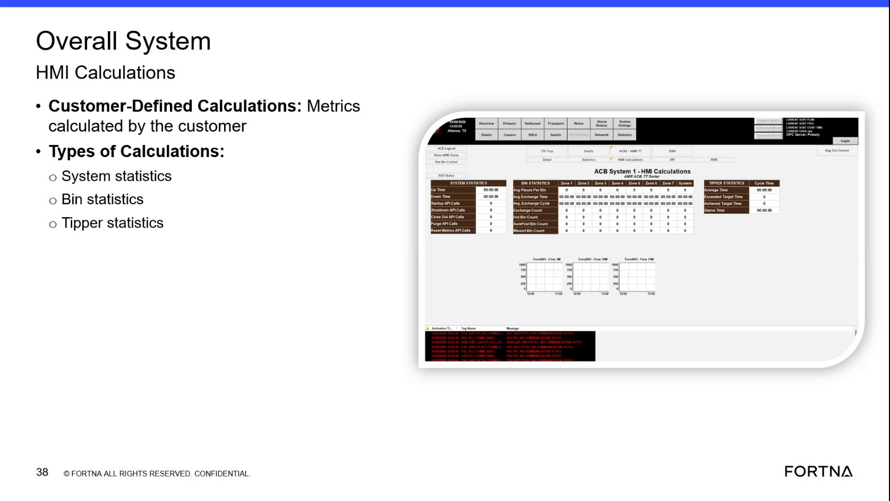

| Procedure ID | proc_identify_customer_defined_calculation_types_in_the_overall_system_hmi_v1 |
|---|---|
| Title | Identify Customer-Defined Calculation Types In the Overall System HMI |
| Procedure Type | reference |
| Primary Role | operator |
| Support Safe | Yes |
| Validation Status | needs_sme_review |
| Merge Status | source_finalized |
Use the training slide content to identify which customer-defined calculation categories are documented in the Overall System HMI.
Use this reference when reviewing the Overall System HMI or the associated training slide to identify the documented customer-defined calculation categories shown for Customer-Defined Calculations.
Responsible role: operator
Instruction:
Open or view the Overall System HMI calculations area where customer-defined calculations are shown, or use the training slide that displays this section.
Expected result:
The Customer-Defined Calculations area is visible for review.
Screens / Images:

Stop or Escalate If:
Responsible role: operator
Instruction:
Locate the 'Customer-Defined Calculations' heading and confirm the screen states that these are 'metrics calculated by the customer.'
Expected result:
The heading and descriptive statement match the documented source wording.
Screens / Images:
Stop or Escalate If:
Responsible role: operator
Instruction:
Find the 'Types of Calculations' list on the displayed slide or screen.
Expected result:
The list of calculation types is visible.
Screens / Images:
Stop or Escalate If:
Responsible role: operator
Instruction:
Identify the listed calculation categories as system statistics, bin statistics, and tipper statistics.
Expected result:
The documented customer-defined calculation categories are identified exactly as shown in the source.
Screens / Images:
Stop or Escalate If:
Responsible role: operator
Instruction:
Record or communicate which customer-defined calculation type is being referenced using only the documented category names from the source.
Expected result:
The referenced calculation type is recorded or communicated using the exact documented category name.
Screens / Images:
Stop or Escalate If: